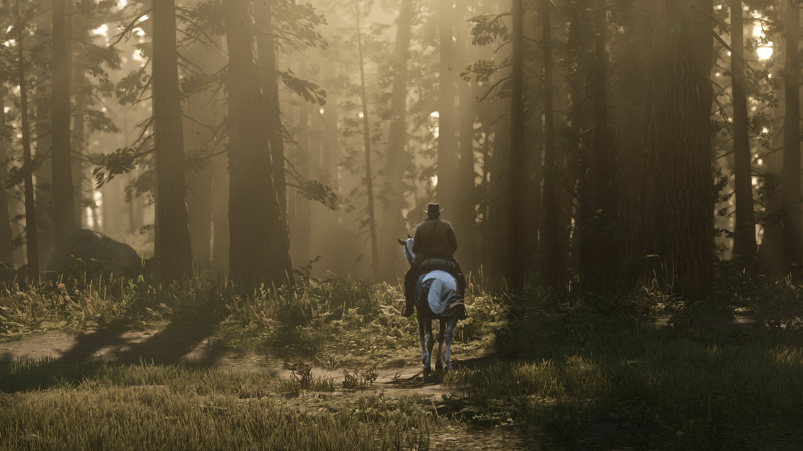
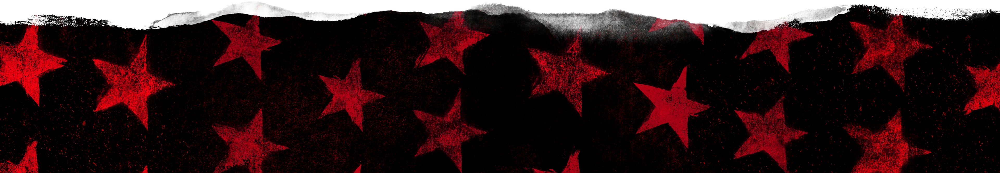

Premiações de red dead redemption II
The Game Awards 2018
- Melhor Narrativa 🏆
- Melhor Design de Áudio 🏆
- Melhor Trilha Sonora/Música 🏆
- Melhor Performance (Roger Clark como Arthur Morgan) 🏆
- Indicado a Jogo do Ano (perdeu para God of War)
BAFTA Games Awards 2019
- Melhor Desempenho (Roger Clark como Arthur Morgan) 🏆
- Indicado a Melhor Jogo, Melhor Narrativa, Melhor Design de Áudio, Melhor Música, entre outros.
D.I.C.E. Awards 2019
- Melhor Direção de Arte 🏆
- Melhor Narrativa 🏆
- Melhor Animação 🏆
- Melhor Design de Áudio 🏆
Golden Joystick Awards 2018
- Melhor Narrativa 🏆
- Melhores Gráficos 🏆
- Jogo do Ano Escolhido pelos Críticos 🏆
Game Developers Choice Awards 2019
- Melhor Tecnologia 🏆
- Indicado a Jogo do Ano, Melhor Narrativa, Melhor Áudio, entre outros.

